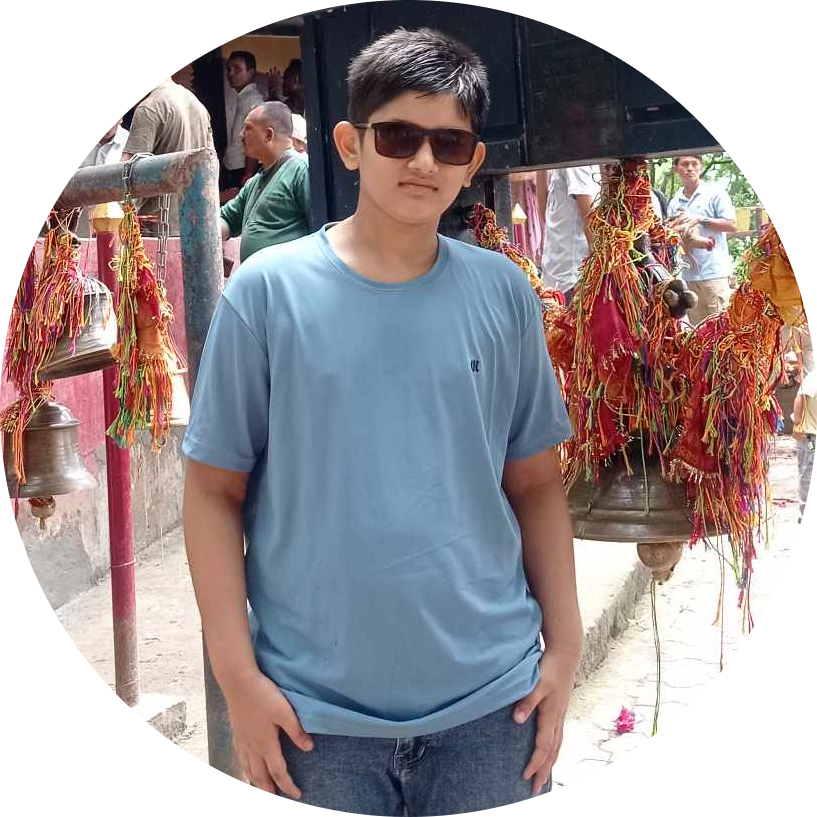

Amazon Khadka
Dreamer, Explorer, Tech Enthusiast
Dreamer, Explorer, Tech Enthusiast
Hello! My name is Amazon Khadka, and I am currently a proud student of Shree Janata Secondary School, where I am enrolled in class 9. My journey in academics has been one of growth and discovery, driven by a deep curiosity and a strong passion for learning new things every day.
From a young age, I have always been fascinated by technology and how it shapes our world. This curiosity has led me to develop a keen interest in programming. My dream is to become a skilled programmer, creating innovative solutions that can positively impact society. I believe that technology has the power to solve many of the challenges we face today, and I am determined to be part of that change.
Outside of academics, I am an avid sports enthusiast. I love playing football, which not only keeps me active but also teaches me valuable lessons in teamwork, leadership, and perseverance. In addition to football, I have a deep love for video games. Playing video games is not just a hobby for me; it’s an activity that hones my strategic thinking, problem-solving skills, and hand-eye coordination.
My family is my biggest source of inspiration and support. My mother, Susma Khadka, has always encouraged me to pursue my dreams and instilled in me the values of hard work and dedication. My father, Padam Khadka, has been a guiding force in my life, teaching me the importance of integrity and resilience. Together, they have always believed in me and have provided me with the foundation to grow and succeed.
I am committed to achieving my goals and continuously improving myself. Whether it’s through my studies, sports, or personal projects, I strive to give my best in everything I do. I believe that with determination and the right mindset, anything is possible, and I am excited about the future that lies ahead.